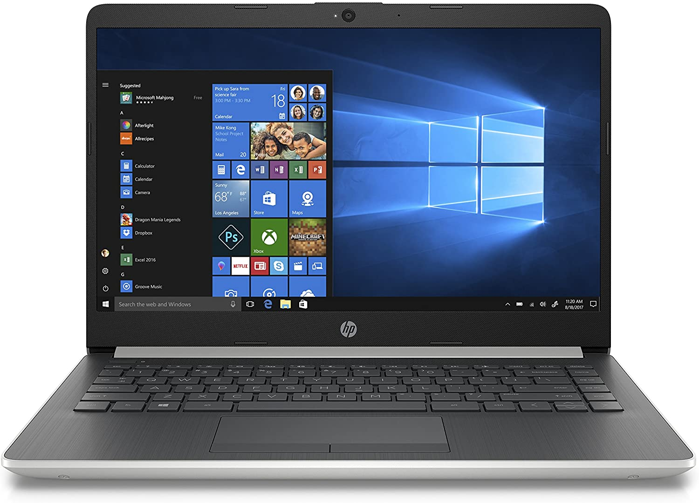

HP 14" Laptop
$249.00
Get reliable performance on the go with the HP 14-dk0028wm Laptop. With long battery life, you can
stay social, productive, and connected. Designed for portability, this lightweight laptop has a
micro-edge display with ultra-narrow bezel, giving you lots of screen in a smaller frame. With the
latest AMD Ryzen 3 processor and a super responsive precision touch pad ? you?ve got the power to
surf, stream, and do more like never before. Long-lasting battery life and fast-charge technology,
this laptop lets you work and play all day. It includes ample storage for photos, videos, and
music?plus a USB-C? port ready for the future of connectivity. Experience the most secure Windows
ever built with Windows 10 in S Mode. With fast boot times, increased responsiveness, and added
protection against phishing and malicious software, applications run more smoothly. Thrill your
visual senses with the latest AMD graphics compute engines for fast, powerful, and fluid graphics.
Video chat in vibrant clarity, even in low light and make every conversation a face-to-face experience
for a better way to stay in touch. Boot up in seconds, transfer files without waiting hours, and enjoy
a snappier experience every time you use your PC. Designed to run more efficiently and more reliably
at faster speeds, DDR4 is the future of RAM. With its higher bandwidth, everything from multi-tasking
to playing games gets a performance boost. Bring home the HP 14-dk0028wm Laptop today.